/* This is a sarcastic article targeting my classmates in Engineering. Nothing of what is written here is serious or real! */
|
|
|
| Computer engineer: WOW it finally prints Hello World! I am a genius! | A Computer Scientist from 1980s repairing her Apple machine in order to do her research in Artificial Intelligence. |
It is clear to see this simple fact in every CS school and every CE school. A typical CS student's computer usually has GNU/Linux or probably FreeBSD installed. They might even take it further and use other UNIX(-Like) systems. Now ask one of those Computer Engineering students to show you their laptop. The argument for Microsoft Windows is always ready: Proteus/Multisim/Autocad/Whatever doesn't work on Linux (Yes they don't know the correct name, which is GNU/Linux).
| 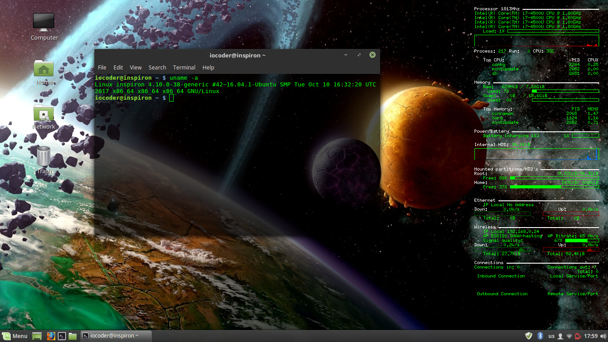 |
| My desktop at some point of time. |
The study of Theoretical Computer Science (TCS) is something that makes a big difference between a Scientist and a dumb Engineer. It is magic. A CS undergraduate student is expected to have courses in Discrete Mathematics, Symbolic Logic, Switching Circuit Theory, Digital Logic, Automata Theory, Formal Languages Theory, Computability Theory, Computational Complexity Theory, Information Theory, Operating Systems, Artificial Intelligence, Data Mining, and Programming Language Theory. This nice collection of these topics really opens your mind. You become smarter. You get a deep understanding of what a computation is, and what the limits of a computer are. These two green points are actually what Computer Science tries to answer.

|
| A CS student amused in her first Linear Algebra lecture. |
Computer Engineers keep claiming that they are the ones who understand the difference between hardware and software, how hardware and software interact, and how to co-design systems that involve both software and hardware. This is not true. First of all, the study of Computer Architecture, which is considered as the core field of Computer Engineering, first originated in CS schools, not Engineering schools!
Modeling a Computer Processor and abstracting it into Instruction Set Architecture (ISA) is a pure CS method of abstracting computing machines into abstract automata! Even if we talk about Computer Organization and how to design the components of the machine, the copulative study of Switching Circuit Theory and Finite Automata Theory is purely Computer Science. I bet 99% of CS schools offer such courses.
After you study the typical mathematical model of a Computer processor, which is basically a Finite State Machine, you are expected to connect the processor to a limited form of a Computer Memory, and abstract this design into a Push-down automaton model, then you study Turing Machine model with an infinite tape, and see how we can simulate any computer program in the world using a Universal Turing Machine. Hereby you start to recognize the theoretical power and limitations of the Computer you have designed, and then you go further by studying Computability and Decidability. You learn how to reduce Turing Machines into models that encorporate the concept of computer register, like Register machines and RAM machine (Harvard Architecture!).
| 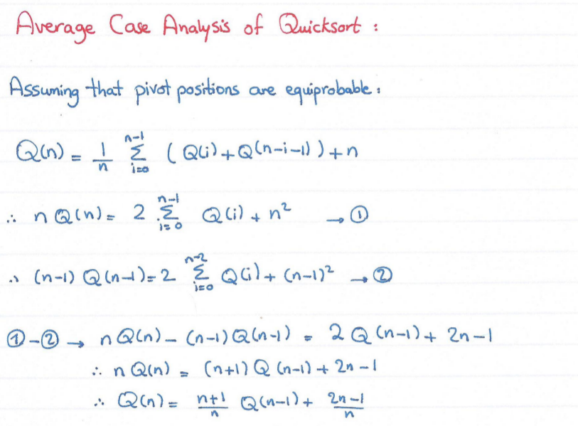 | 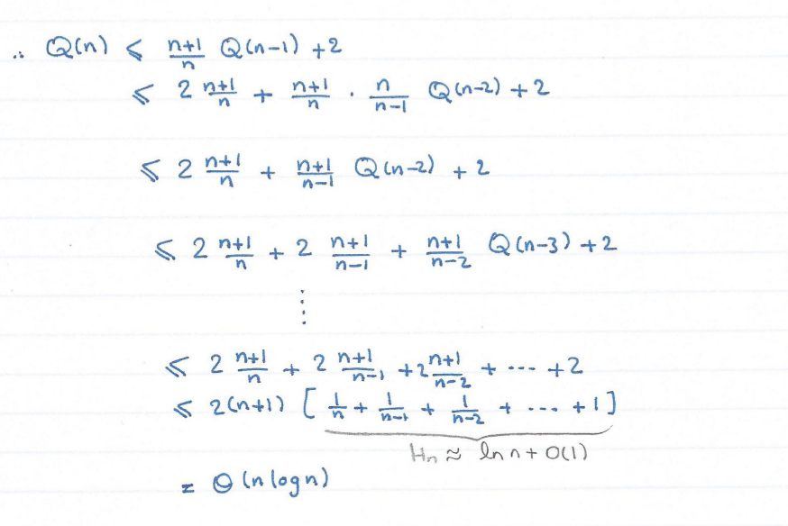 |
|
One of the
Computational Complexity Theory
lectures at my school,
by Prof.
Amr Elmasry
(hand-written by my colleague, Hanan Ahmad). This is Computer Science. |
|
The poor Computer Engineering students generally really lack the connection between Digital Design/Computer Architecture and Theory of omputation. They just teach them that there is something called Finite State Machine, and it consists of circles and arrows! (LOL!) Then they blindly use them to create sequential Logic, and to design a Processor Control Unit, either hard-wired or programmable, as well as ALUs, Pipelines, Exceptions, and other structures. That's it. They claim they know where the hardware and software meet, but the reality is: they never know!
And the reason why they do not know where they meet is simple: If they did study Computer Science, they would have known that any kind of logic that solves a computable problem (i.e, any Turing Machine) can be implemented using either software (i.e, those symbols on the tape of the Turing Machine!), or Hardware (any model of computation whose power is lower than or equal to Turing Machine, can be simulated by a Turing Machine!)
| 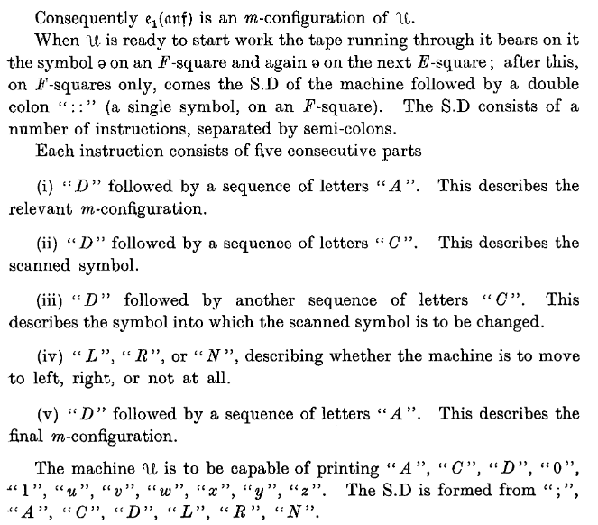 | |
|
On Computable Numbers,
with an Application to the Entscheidungsproblem.
By Alan Turing, 1936. This is the point of time when CS was born. (Ignore everything you have seen on that Enigma-focused movie because it has nothing to do with the real research work done by the mathematician). |
|
Computer Engineers will claim everywhere that they are the masters of low-level programming. The reality is, they are rather the masters of Spaghetti Programming.
When we started learning programming at university, it was an 'Art' course, not Science. PROGRAMMING IS AN ART. Furthermore, the programming textbook that any computer scientist must have been exposed to at least once in their life is clearly called 'The Art of Computer Programming' (TAOCP) by the mathematician Donald Knuth. Guess what? The code samples in this CS-core book is in Assembler Language. I am not saying 'CS-core' because of the main topic of the textbook (which is programming), but actually because of the content which basically encorporates Data Structures and Algorithms, i.e. topics where Engineers are very very poor.
In any CS school, there are basic set of system-software-related courses that most CS majors must take:
| 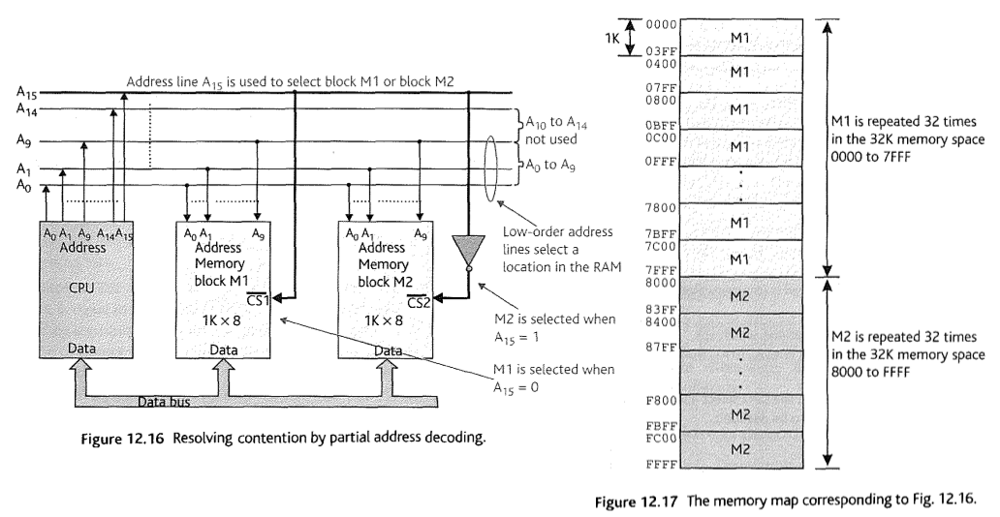 |
| Partial address decoding example, from Principles of Computer Hardware, Clements. |
| 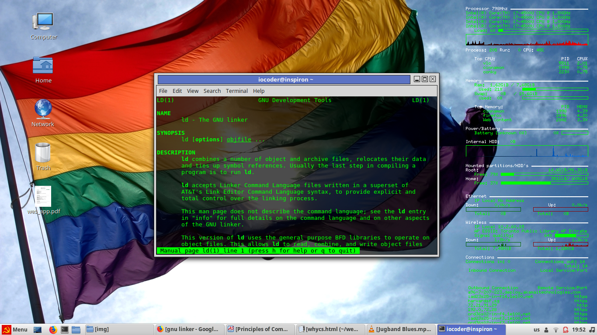 |
| GNU linker manual pages on my gay communist machine. |
| 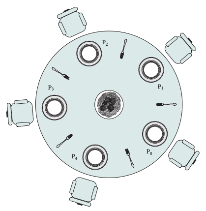 |
| Every CS major knows what this is. From Operating Systems Internals and Design Principles, Stallings. |

|
|
Ada Lovelace,
the first computer programmer in history.
The brilliant Ada programming language is named after her. |
| 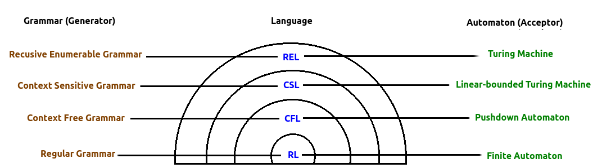 |
| Language classes and their corresponding Grammars (Generators) and Automata (Acceptors). |
({a-z}|{A-Z}|{_}).({a-z}|{A-Z}|{0-9}|{_})*
(open_brkt, {(})
(close_brkt, {)})
(if_keyword, {i}.{f})
(op, {<}|{>}|{=})
(identifier, ({a-z}|{A-Z}|{_}).({a-z}|{A-Z}|{0-9}|{_})*)
(integer_literal, {0-9}.{0-9}*.({L}|lambda))
lexer.elf.
lexer.elf:
if (var123 = 5)
lexer.elf:
if_keyword open_brkt identifier op
integer_literal close_brkt

|
|
The left side is Chomsky's hierachy for grammar types.
The right side is the hierarchy of automata based on their power. The hidden side is the magical power that created this symmetry! |
| 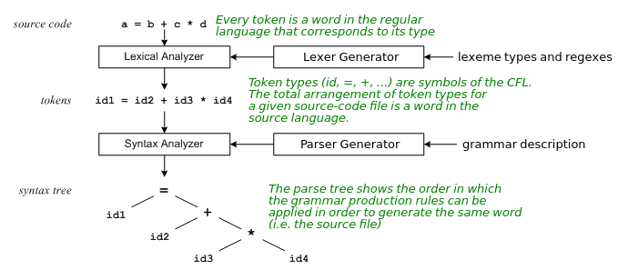 |
| The big picture up till now. |
| 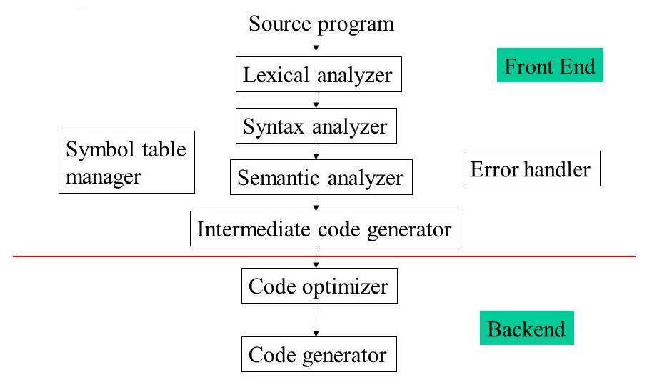 |
| All the phases of compilation. |
I know the poor engineering argument is coming: "and what do all these courses have to do with Firmware and Embedded Systems programming?!", said the ignorant Computer Engineer. The point, which the poor Engineer can't see, is that these courses shape your mind in a way that helps you write super-clean code, and gives you deep understanding of what you are doing with your Embedded Device or Computer BIOS, for instance.
And I have seen it happening too often in Valeo and other places. Computer and Electrical Engineers are terrible at coding. Whether the code is high level or low level, they do not know what they are doing. They do not understand what the Compiler does under the hood, or the main concepts of the Assembler Language. They do not know what Linker, Loader, Macro Processor, Lexer, Parser, and other tools are. When they study Computer Architecture or Operating Systems, they usually take them at a CS department, and, as you know, they tend to be so dumb compared to their CS-majored classmates.
Computer Engineering graduates have never cared about Data Structures, Algorithm Analysis, File Organization, and many other important topics. Their curriculum has no structure. Their outline is highly debatable and they will never have a deep understanding of 'Computers' and 'Computation' unless they erase all the damage caused to their brain due to studying Computer Engineering, then start a clear Computer Science course from scratch.
| 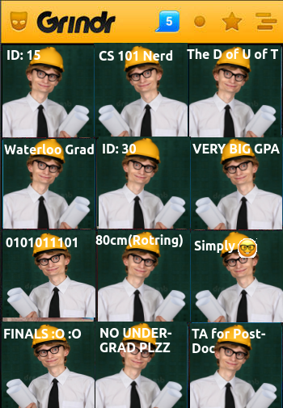 |
| Enough said. |
If you are considering to do your Undergraduate studies in a Computer-related field of study, I suggest you consider Computer Science. Computer Science gives you a very deep philosophical, mathematical, and logical understanding of what a computer and computation are. Computer Engineering will narrow down your mind and you will miss a lot of interesting CS material and fun.
If you join a CS program, you can simply take courses in Embedded Systems, Modern Physics, Quantum Mechanics, Circuits, Electronics, and IC/VLSI Design if you are interested. All other hardware-related courses are mostly offered by your CS school (like Computer Organization, Computer Architecture, Digital Design, FPGA Labs, etc.)
It is a big mistake to believe that Computer Science is more about software and that Computer Engineering is more about hardware. Computer Science is in fact a branch of Mathematics; and the powerful knowledge of such a mathematical field of study serves both software and hardware sides. Computer Science is all about Computation. And computation can be implemented either by hardware or software. Computer Science education coves the study of both implementations. Most Computer Scientists must have done courses in Digital Logic and Computer Architecture before obtaining their degree in Computer Science. Many other aspects of Computer Science are not only about software itself, but also cover the theory and the mathematics behind Computer Science. This is why CS graduates are good programmers and good computer-hardware masters at the same time.

|
| Sample checklist for Computer Science and Computer Engineering courses. |
Many CS majors actually do Modern Physics and Quantum Mechanics courses because they are interested in Quantum Computing. It's very common for CS majors to take Modern Physics and Quantum Mechanics courses from other departments. The Electric Circuits course is a direct application for the mathematical tools that you have already studied (differential equations to model the circuits first, then Laplace Transform and Frequency-Domain Analysis for RLC circuits, and/or Phasor-Domain Analysis for AC circuits).
The Electronics course introduces semiconductor elements in such circuits, and this results in a change to the analytical model of the circuit Impedance which then becomes non-linear. You will learn how to model the Diode, BJT, and MOSFET circuits; and how to construct Signal Ampilifiers, Op-amps, TTL Logic and CMOS Logic using the transistor as a switch/ampilifier triode-like device. And of course it is very easy for a CS guy to study all this materials because CS students are smart.
In contrast, if you go with the Computer Engineering path, you will have a great overhead because you will have to study a lot of Electrical Engineering courses that you might not be interested in, and you will have limited time studying CS-related courses. You will have to make big sacrifices. Furthermore, you will have to take Operating Systems, Computer Architecture, and many other CS courses from CS department, and you will feel very dumb when you attend the classes with native CS majors because they know better than what you do. As a result, you will have depression and will hate your choices. Your coding skills are also gonna be seen as terrible, compared to the CS dudes of the same class.
You will miss courses on Data Structures, Algorithm Analysis, Compilers, Theory of Computation, Artificial Intelligence, Mathematical Logic, Discrete Math, Statistical Methods for Computers, Numerical Analysis, Linear and Dynamic Programming, and many other interesting stuff. After graduation, you will not be able to complete with CS grads in many areas. You will always have that awkward feeling of regretting your choices.
| A Computer Engineering graduate. |